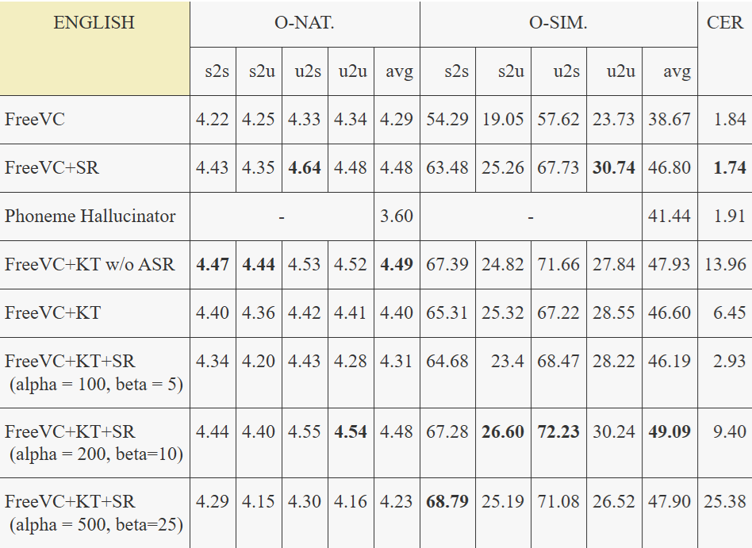

Voice Conversion for Low-Resource Languages via Knowledge Transfer and Domain-Adversarial Training
Abstract
Voice conversion (VC) aims to transform speech from a source speaker to a target speaker while preserving the original linguistic content. However, existing VC models typically require large annotated datasets containing transcripts and speaker labels, posing significant challenges for low-resource languages. In any-to-any voice conversion (VC) models that do not rely on annotated datasets, disentangling speaker information from the source speech while preserving linguistic content remains a significant challenge, often resulting in outputs that retain attributes of the source speaker. This paper introduces a novel low-resource VC model that combines knowledge transfer with domain-adversarial training to leverage information from high-resource languages for the benefit of low-resource languages. The proposed approach utilizes pre-trained models, with domain-adversarial training enabling the separation of content from speaker identity without the need for annotated datasets. Objective and subjective evaluations on the low-resource Vietnamese language demonstrate that the proposed model outperforms existing methods in terms of naturalness and speaker similarity in low-resource scenarios.
For the objective evaluation of English results, we employed VCTK as the training dataset and selected speakers from LibriTTS as unseen targets. Regarding data use in test set, refer to section IIIB. CER are obtained using Facebook's Hubert-large-ls960-ft model, while O-SIM was calculated using Titanet-large. Finally, NISQA was employed to compute O-NAT.
